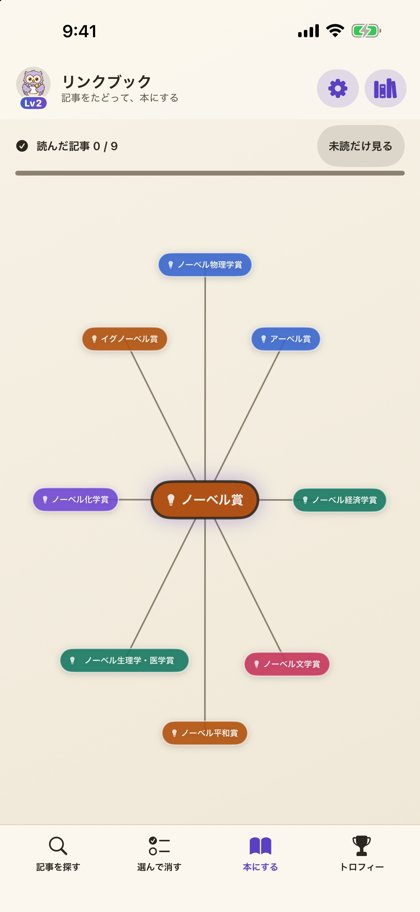
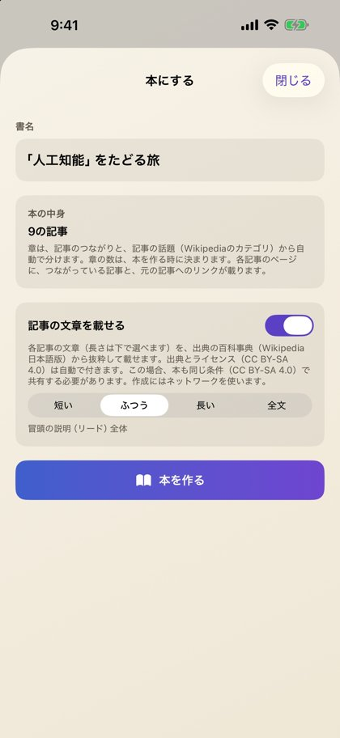
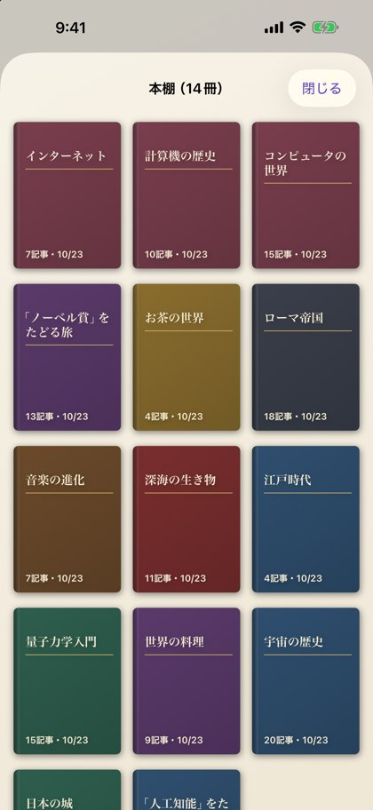
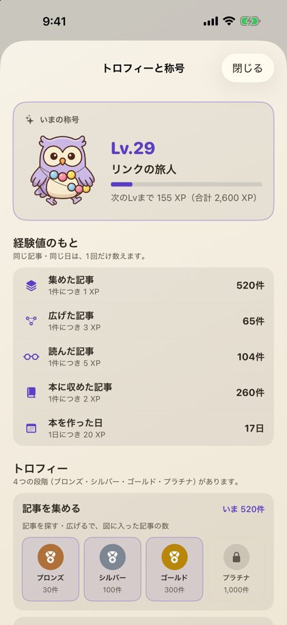

リンクブック
記事をたどって、本にする。iPhone・iPad用アプリ（無料）
気になった言葉を入れると、関連する記事が図になって広がります。たどった記事を選んで、章立て・目次・出典つきの1冊の本（PDF）にまとめ、本棚で読み返せるアプリです。




できること
- 言葉を検索して、記事を丸いノードとして追加し、関連の深い記事を選んで広げる
- 書名・章・目次・出典リンク・奥付つきのPDFの本に書き出す
- 作った本は本棚に並び、読みかけのページから再開できる
- 記事をたどる・本を作るとレベルが上がり、称号とトロフィーが集まる
ご案内
- 記事の取得にインターネット接続が必要です。アカウント登録は不要で、作った図や本は端末の中だけに保存されます。
- 無料です。ノード図の画面にバナー広告が表示されます。2冊目からの本づくりは、短い広告を見るとその日3冊まで作れます（最初の1冊は広告なし）。
- 記事の文章はクリエイティブ・コモンズ 表示-継承 4.0（CC BY-SA 4.0）のもとで提供されたもので、出典とライセンスをアプリ内に表示します。
- 本アプリは非公式です。記事の提供元のネット百科事典および運営財団とは提携しておらず、承認も受けていません。
リンク
運営：クロおじさん（屋号：クロLab）／お問い合わせ：kuroojisan.info@gmail.com